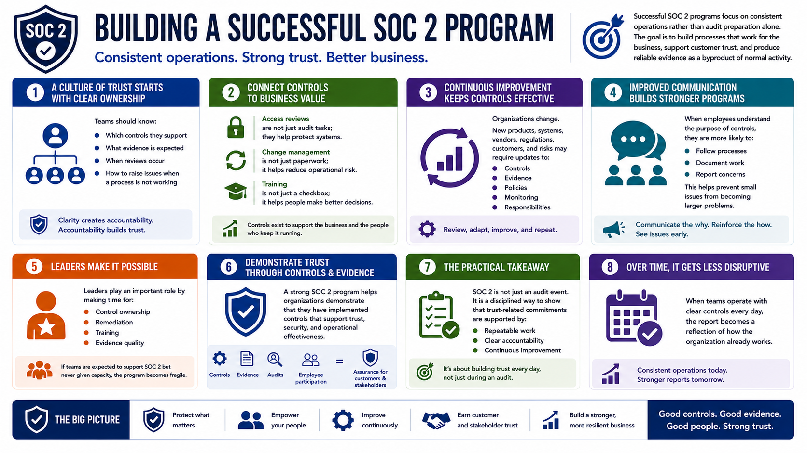

What Is SOC 2?
Building a Culture of Trust
Connecting to LMS... Progress: in progress
Version 1.0 | Date: 2026-06-16 | Educational overview of SOC 2 concepts, controls, evidence, and trust.

Narration
Successful SOC 2 programs focus on consistent operations rather than audit preparation alone. The goal is to build processes that work for the business, support customer trust, and produce reliable evidence as a byproduct of normal activity.
A culture of trust starts with clear ownership. Teams should know which controls they support, what evidence is expected, when reviews occur, and how to raise issues when a process is not working.
Good programs also connect controls to business value. Access reviews are not just audit tasks; they help protect systems. Change management is not just paperwork; it helps reduce operational risk. Training is not just a checkbox; it helps people make better decisions.
Continuous improvement is important because organizations change. New products, systems, vendors, regulations, customers, and risks may require updates to controls, evidence, policies, monitoring, and responsibilities.
SOC 2 can also improve communication. When employees understand the purpose of controls, they are more likely to follow processes, document work, and report concerns before small issues become larger problems.
Leaders play an important role by making time for control ownership, remediation, training, and evidence quality. If teams are expected to support SOC 2 but never given capacity, the program becomes fragile.
A strong SOC 2 program helps organizations demonstrate that they have implemented controls that support trust, security, and operational effectiveness. Through controls, evidence, audits, and employee participation, organizations can provide assurance to customers and stakeholders about their security and business practices.
The practical takeaway is that SOC 2 is not just an audit event. It is a disciplined way to show that trust-related commitments are supported by repeatable work, clear accountability, and continuous improvement.
Over time, this culture can make SOC 2 less disruptive. When teams operate with clear controls every day, the report becomes a reflection of how the organization already works.